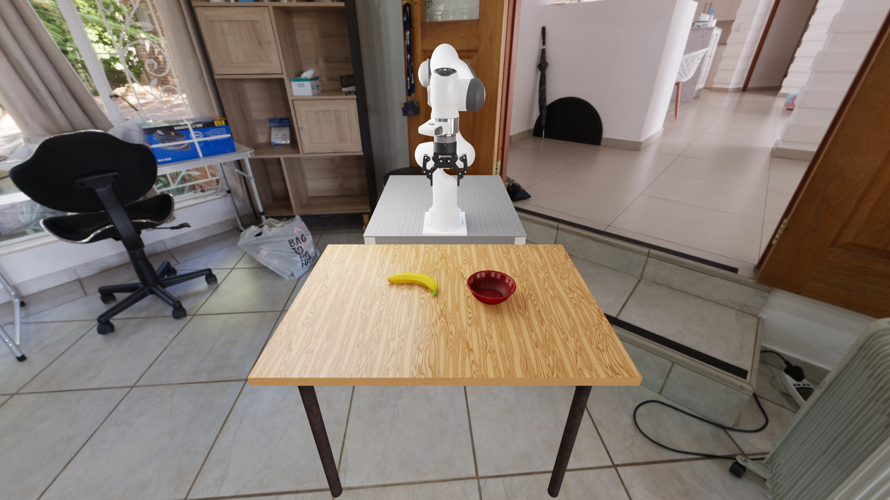

CoMP-EKF
Uses the state Jacobian to propagate a local linear approximation of the flow.
Epistemic uncertainty for pre-trained robot policies.
CoMP extracts epistemic uncertainty from a single pre-trained flow matching policy
using moment recursions derived from a linearized ODE sampler.
Uncertainty in the policy’s weights produces different action trajectories, even from the same initial noise. Their spread reflects epistemic uncertainty.
Compare BayesDiff at 10 and 50 integration steps: its reported uncertainty shrinks as the solver is refined.
Explore full RoboLab episodes under three instruction wordings. Select CoMP-UKF or either BayesDiff setting to follow its measured epistemic uncertainty. The left animation illustrates the concept of epistemic uncertainty in flow matching policies: different plausible weights generate different actions from the same initial noise.
Estimate uncertainty from a policy you already have.
CoMP-EKF and CoMP-UKF are derived from a linearized ODE sampler.
robomimic, LIBERO and RoboLab.
Fit a weight posterior while preserving the policy’s action predictions.
Why a more accurate solver can report less uncertainty
Reliable epistemic uncertainty helps robot policies anticipate failures and select demonstrations for fine-tuning on new tasks. To quantify this uncertainty in diffusion models, BayesDiff introduced Bayesian moment propagation, carrying the state’s mean and variance through the sampling chain. However, it ignores the dependence between the state and the sampled weights that generate it. We prove that, under standard regularity assumptions, its reported total variance has an O(1/T) upper bound for T Euler steps. Finer integration therefore drives its uncertainty estimates towards zero even as numerical accuracy improves, a phenomenon we call variance collapse.
Posterior reference total variance at this grid: 0.017953
Solid contours show each estimator’s covariance; dashed contours show the ground truth covariance. Both panels use the same scale.
Paper: Section 3 · Figure 1 · Appendix A.1
The same sampled weights influence the state at every integration step.
That dependence needs to be propagated through the ODE solver.
From a pre-trained flow model to calibrated epistemic uncertainty
We propose CoMP, which retains state-weight cross-covariance through moment recursions derived from a jointly linearized ODE sampler. Under the same regularity assumptions used for BayesDiff, we prove an O(1) upper bound on total variance for this linearized recursion, independent of the number of integration steps. Our proposed estimators, CoMP-EKF and CoMP-UKF, provide two practical ways to propagate these moments.
The ODE state x evolves from noise to a generated sample; θ denotes the last-layer weights. For a robot policy, the sample is an action chunk. At step i of T Euler steps, CoMP carries:
Update the state mean, covariance and state-weight cross-covariance together. CoMP-EKF uses a local linearization; CoMP-UKF passes deterministic sigma points through the nonlinear Euler map. Both retain the dependence on the same uncertain weights across steps.
Paper: Section 3 · Appendices A.3 and A.4 for the augmented posterior and moment updates
Uses the state Jacobian to propagate a local linear approximation of the flow.
Passes deterministic sigma points through the network, capturing nonlinear effects beyond a local linearization.
Append the policy’s existing image, language and proprioception embeddings to the last layer. The added features improve uncertainty estimates without retraining or changing MAP action predictions.
Paper: Appendix A.4, Algorithm 2
Start with an initial noise sample x0, a fixed weight covariance Σθ, and the velocity field uθMAP evaluated at the pre-trained weights. Use T Euler steps of size Δt = 1/T, at times ti = iΔt.
Construct 2D + 1 sigma points χj that represent the state mean mi and covariance Pi. Here D is the state dimension; wj(m) and wj(c) are the unscented transform’s mean and covariance weights.
The propagated points give the next mean ȳ, the transported covariance Σiyy, and the input-output cross-covariance Σixy:
Find the affine state map Ai from the sigma points by solving
Here I is the identity and εi > 0 regularizes the solve, including at P0 = 0. Compute the weight sensitivity Bi = Δt Jiθ analytically for the linear last layer, where Jiθ is the velocity’s weight Jacobian at (mi, ti, θMAP). No weight sigma points are needed.
The highlighted terms retain state-weight dependence. Both covariance updates use Ci from the current step.
A single posterior weight draw shapes the action trajectory while the ODE is being solved. To keep this dependence, CoMP carries C = Cov(x, θ), alongside the state covariance P and weight covariance Σθ. Linearizing an Euler step about the state mean and MAP weights gives a closed-form update for the state covariance:
Here the prime denotes the next step. A and B are the Euler update’s Jacobians with respect to the state and weights; step indices are omitted for readability. The highlighted cross terms couple uncertainty already in the state to the same weights acting at the next step. CoMP-UKF retains these cross terms, using sigma points to estimate the transported covariance and the affine state map.
Under standard regularity assumptions, BayesDiff’s total variance has an O(1/T) upper bound for T Euler steps. Carrying the cross-covariance gives CoMP’s linearized recursion an upper bound independent of T.
Paper: Section 3 · Appendices A.1 and A.2 for the proofs

Applications and experiments on robot policies
As instructions become more ambiguous and task success declines, epistemic uncertainty should rise. On RoboLab, the plain Laplace head barely responds to these changes. Our augmented Laplace head makes uncertainty estimators more responsive to language ambiguity by reusing observation embeddings the policy already computes.

“Grasp the yellow banana and place it inside the red bowl on the table”
Relative uncertainty scores, scaled between 0 and 1 for each head across all tasks and wordings.
We evaluate uncertainty at the first observation of each rollout, keeping images and proprioception fixed across wordings to isolate changes in language conditioning. Values are medians over 80 held-out rollouts per task and wording.Paper: Section 4.2 · Appendix A.8

Our uncertainty estimators can warn that a rollout is likely to fail before it ends. A useful alarm flags a failing rollout early, leaving time to intervene. Each method raises an alarm when its score crosses a calibrated threshold.
For readability, each estimator’s scores are nonlinearly rescaled to place its calibrated failure threshold at 0.5. Alarm decisions are unchanged; values are not failure probabilities.
Explore selected success and failure examples. Play or scrub a rollout to follow each estimator’s uncertainty and first alarm. All methods score the same recorded policy observations; changing the estimator keeps the video fixed.Paper: Section 4.3 · Appendix A.9
CoMP-UKF improves failure detection over BayesDiff and matches or exceeds several post-hoc uncertainty estimators. Timestep-wise accuracy rewards correct detections made early in a rollout.

Use the pre-trained policy’s uncertainty to select demonstrations for data-efficient adaptation to new tasks. On LIBERO-10, CoMP-UKF reaches the target success rate with fewer demonstrations and achieves the largest mean gain in the main comparison.
mean success-rate gain
over random selection
Averaged across budgets and all ten tasks, over five trained policies. CoMP uses the augmented head; post-hoc baselines use the plain head. CoMP-EKF shows little benefit, possibly because its local linearization misses nonlinear effects captured by CoMP-UKF’s unscented transform.